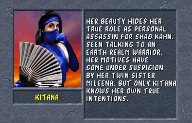

Golpes Especiais
Fan Swipe: Tras + SA
Fan Throw: Frente, Frente, SA + SB (Pode ser usado no ar)
Fan Lift: Tras, Tras, SA
Square Wave Punch: Frente, Baixo, Tras, SA
Kiss of Death: (Segurando CB) Frente, Frente, Baixo, Frente (Soltar CB) (Perto)
Fan Decapitation: Bloqueio, Bloqueio, Bloqueio, CA (Perto)
Stage Fatality: Frente, Baixo, Frente, CA (Perto)
Babality: Baixo, Baixo, CA (Pular)
Friendship: Baixo, Baixo, Baixo, Cima, CB